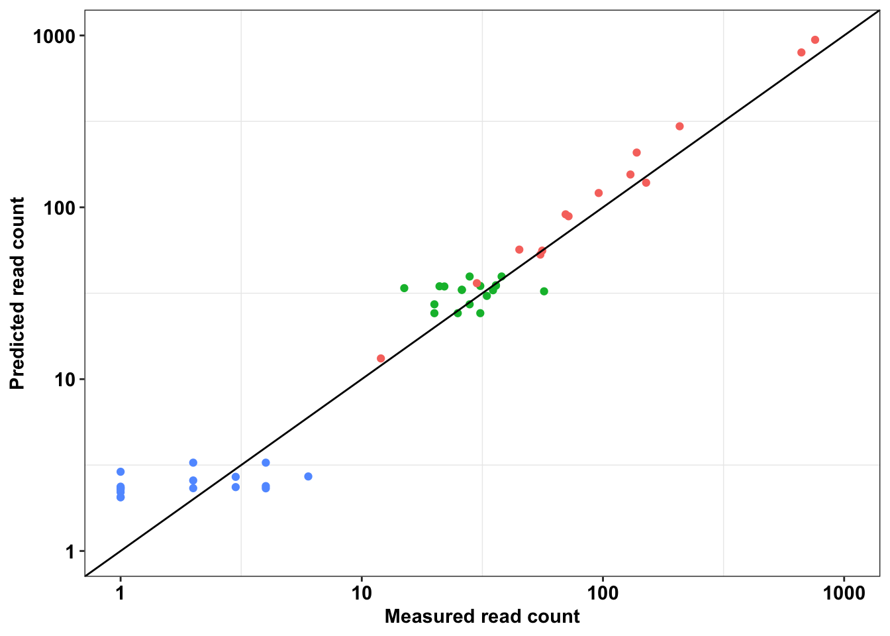
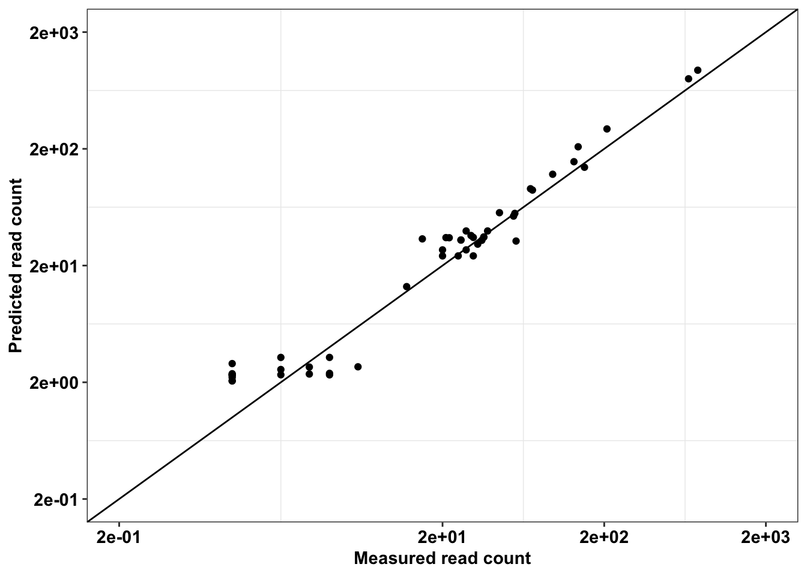
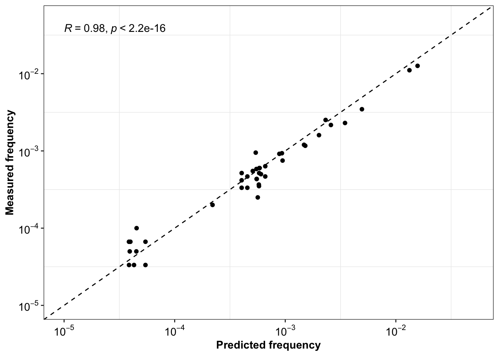
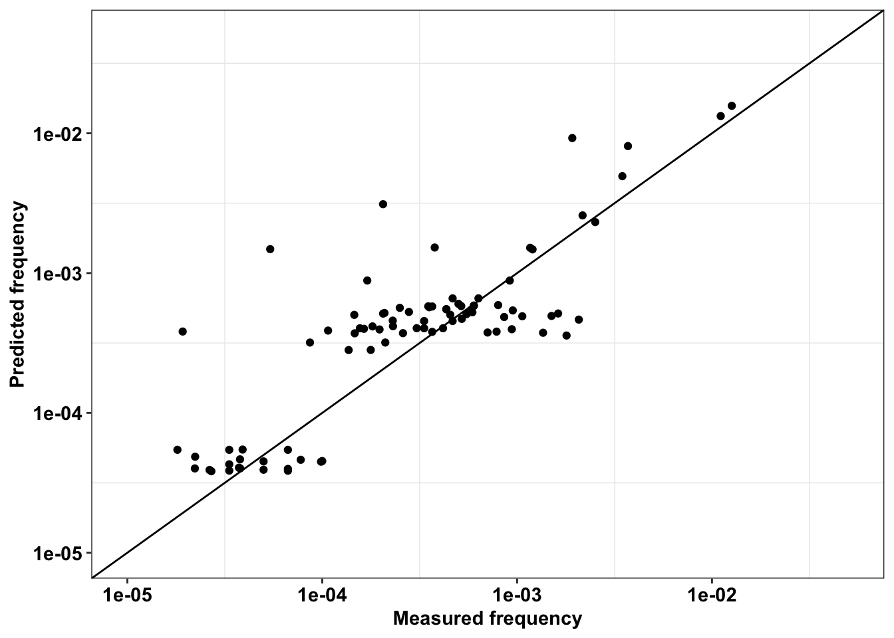
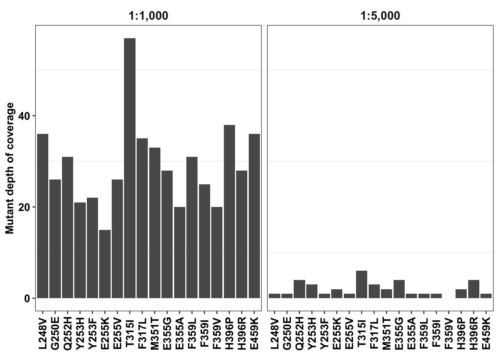

Last updated: 2025-06-21
Checks: 6 1
Knit directory: abl_dms/
This reproducible R Markdown analysis was created with workflowr (version 1.6.2). The Checks tab describes the reproducibility checks that were applied when the results were created. The Past versions tab lists the development history.
The R Markdown is untracked by Git. To know which version of the R
Markdown file created these results, you’ll want to first commit it to
the Git repo. If you’re still working on the analysis, you can ignore
this warning. When you’re finished, you can run
wflow_publish to commit the R Markdown file and build the
HTML.
Great job! The global environment was empty. Objects defined in the global environment can affect the analysis in your R Markdown file in unknown ways. For reproduciblity it’s best to always run the code in an empty environment.
The command set.seed(20250621) was run prior to running
the code in the R Markdown file. Setting a seed ensures that any results
that rely on randomness, e.g. subsampling or permutations, are
reproducible.
Great job! Recording the operating system, R version, and package versions is critical for reproducibility.
Nice! There were no cached chunks for this analysis, so you can be confident that you successfully produced the results during this run.
Great job! Using relative paths to the files within your workflowr project makes it easier to run your code on other machines.
Great! You are using Git for version control. Tracking code development and connecting the code version to the results is critical for reproducibility.
The results in this page were generated with repository version 253724b. See the Past versions tab to see a history of the changes made to the R Markdown and HTML files.
Note that you need to be careful to ensure that all relevant files for
the analysis have been committed to Git prior to generating the results
(you can use wflow_publish or
wflow_git_commit). workflowr only checks the R Markdown
file, but you know if there are other scripts or data files that it
depends on. Below is the status of the Git repository when the results
were generated:
Ignored files:
Ignored: .DS_Store
Ignored: .Rproj.user/
Ignored: analysis/.Rhistory
Ignored: data/.DS_Store
Ignored: output/.DS_Store
Untracked files:
Untracked: analysis/Adding_Confidence_Intervals.Rmd
Untracked: analysis/Homepage_Spike_In_Mutants.Rmd
Untracked: analysis/dose_response_curve_fitting_with_errorbars.Rmd
Untracked: analysis/spikeins_depthofcoverages.Rmd
Untracked: analysis/twinstrand_spikeins_data_generation.Rmd
Untracked: assets/
Untracked: data/Twinstrand/
Untracked: data/ic50data/
Untracked: data/spikeins_maf_merge_formanuscript.csv
Untracked: data/twinstrand_maf_merge.csv
Untracked: data/twinstrand_microvariations_normalized.csv
Untracked: data/twinstrand_simple_melt_merge.csv
Untracked: output/spikeins_figures/
Untracked: output/twinstrand_maf_merge.csv
Untracked: output/twinstrand_simple_melt_merge.csv
Unstaged changes:
Modified: analysis/index.Rmd
Note that any generated files, e.g. HTML, png, CSS, etc., are not included in this status report because it is ok for generated content to have uncommitted changes.
There are no past versions. Publish this analysis with
wflow_publish() to start tracking its development.
#Inputs:
# rm(list=ls())
conc_for_predictions=0.8
net_gr_wodrug=0.05
#Reading required tables
twinstrand_maf_merge=read.csv("output/twinstrand_maf_merge.csv",header = T,stringsAsFactors = F)
# twinstrand_maf_merge=read.csv("output/twinstrand_maf_merge.csv",header = T,stringsAsFactors = F)
twinstrand_simple_melt_merge=read.csv("output/twinstrand_simple_melt_merge.csv",header = T,stringsAsFactors = F)
# twinstrand_simple_melt_merge=read.csv("output/twinstrand_simple_melt_merge.csv",header = T,stringsAsFactors = F)
ic50data_long=read.csv("data/ic50data/ic50data_all_conc.csv",header = T,stringsAsFactors = F)
# ic50data_long=read.csv("output/ic50data_all_conc.csv",header = T,stringsAsFactors = F)
ic50data_long$netgr_pred=net_gr_wodrug-ic50data_long$drug_effectPlotting whether the expected spike-in frequency matched the observed spike-in frequency
###Making the figure for Justin and Simon's grant
enu_plots=twinstrand_simple_melt_merge%>%filter(experiment%in%c("Enu_4","Enu_3"),duration%in%"d3d6")
#hardcoding adjustments to the growth rates
enu_plots$netgr_obs[enu_plots$experiment=="Enu_3"]=enu_plots$netgr_obs[enu_plots$experiment=="Enu_3"]-.011
# plotly=ggplot(enu_plots,aes(x=netgr_pred,y=netgr_obs,label=mutant,fill=factor(experiment)))+geom_text()+geom_abline()+cleanup
# ggplotly(plotly)
#Plotting SP 1000 and 5000
a=twinstrand_simple_melt_merge%>%
filter(!experiment%in%c("Enu_4","Enu_3"),duration%in%"d3d6",conc=="0.8")%>%
mutate(netgr_obs=case_when(experiment=="M5"~netgr_obs+.015,
experiment%in%c("M3","M6","M5","M4","M7")~netgr_obs))
a_sum=a%>%group_by(mutant,Spike_in_freq)%>%summarize(mean_netgr_pred=mean(netgr_pred),mean_netgr_obs=mean(netgr_obs),sd_netgr_obs=sd(netgr_obs))`summarise()` has grouped output by 'mutant'. You can override using the `.groups` argument.twinstrand_maf_merge=twinstrand_maf_merge%>%
mutate(Spike_in_freq=as.numeric(Spike_in_freq))%>%
mutate(Spike_in_freq=case_when(experiment=="Enu_4"~2000,
experiment==experiment~Spike_in_freq))%>%
mutate(actualDepth=Depth*3)%>% #To account for 2 mouse 1 human reads
mutate(expectedAltDepth=case_when(time_point=="D0"&Spike_in_freq==1000~Depth/1000,
time_point=="D0"&Spike_in_freq==5000~Depth/5000,
time_point=="D0"&Spike_in_freq==2000~Depth/2000,
time_point==time_point~NaN))
a=twinstrand_maf_merge%>%filter(time_point=="D0",experiment%in%c("M3","M4","M5","M6","M7")&tki_resistant_mutation=="True"|experiment%in%"Enu_4",!mutant=="NA",!mutant=="D276G",!mutant=="V280syn")%>%
mutate(expectedAltDepth=case_when(experiment=="Enu_4"&mutant=="F311L"~expectedAltDepth,
experiment=="Enu_4"&mutant=="T315I"~expectedAltDepth*55,
experiment=="Enu_4"&mutant=="F317L"~expectedAltDepth*6,
experiment=="Enu_4"&mutant=="E355G"~expectedAltDepth*3,
experiment=="Enu_4"&mutant=="F359V"~expectedAltDepth*13,
experiment=="Enu_4"&mutant=="F359C"~expectedAltDepth*5,
experiment=="Enu_4"&mutant=="H396P"~expectedAltDepth*17,
experiment=="Enu_4"&mutant=="A397P"~expectedAltDepth*12,
experiment=="Enu_4"&mutant=="Y253H"~expectedAltDepth*63,
experiment=="Enu_4"&mutant=="Q252H"~expectedAltDepth*5,
experiment=="Enu_4"&mutant=="G250E"~expectedAltDepth*11,
experiment=="Enu_4"&mutant=="L248V"~expectedAltDepth*6,
experiment=="Enu_4"&mutant=="H214R"~expectedAltDepth*4,
experiment=="Enu_4"&mutant=="K285N"~expectedAltDepth*5,
experiment=="Enu_4"&mutant=="L324R"~expectedAltDepth*7,
mutant==mutant~expectedAltDepth))
plotly=ggplot(a,aes(x=factor(experiment),y=AltDepth/Depth,color=mutant))+geom_point(position=position_dodge(.5))+scale_y_continuous(trans="log10")+cleanup
ggplotly(plotly)ggplot(a,aes(x=AltDepth,y=expectedAltDepth,color=experiment))+geom_point()+scale_y_continuous(trans="log10",limits = c(1,1000),name = "Predicted read count")+scale_x_continuous(trans="log10",limits = c(1,1000),name="Measured read count")+geom_abline()+cleanup+theme(legend.position = "none")
# ggsave("grant_fig.pdf",width = 3,height = 3,units = "in",useDingbats=F)
ggplot(a,aes(x=AltDepth,y=expectedAltDepth))+geom_point()+scale_y_continuous(trans="log10",limits = c(.2,2000),name = "Predicted read count",breaks=c(.2,2,20,200,2000))+scale_x_continuous(trans="log10",limits = c(.2,2000),name="Measured read count",breaks=c(.2,20,200,2000))+geom_abline()+cleanup+theme(legend.position = "none")
# ggsave("grant_fig_v2.pdf",width = 3,height = 3,units = "in",useDingbats=F)
ggplot(a%>%filter(AltDepth>1),aes(y=AltDepth/60000,x=expectedAltDepth/60000))+
geom_point()+
scale_y_continuous(trans="log10",limits=c(.00001,.05),name = "Measured frequency",breaks=c(10^-5,10^-4,10^-3,10^-2),labels=parse(text=c("10^-5","10^-4","10^-3","10^-2")))+
scale_x_continuous(trans="log10",limits=c(.00001,.05),name="Predicted frequency",breaks=c(10^-5,10^-4,10^-3,10^-2),labels=parse(text=c("10^-5","10^-4","10^-3","10^-2")))+
geom_abline(linetype="dashed")+
cleanup+
theme(legend.position = "none")+
stat_cor(method="pearson")
# ggsave("output/spikeins_figures/measuredvspredicted.pdf",width = 3,height = 3,units = "in",useDingbats=F)twinstrand_maf_merge=read.csv("output/twinstrand_maf_merge.csv",header = T,stringsAsFactors = F)
###Putting data from all the experiments on the same plot
#First, creating day 0 values for M4,M5,M7, and sp_enu_3. Whenever you see any of these experiments, add M3's or M6's or Sp_Enu4's D0 counts for its counts.
twinstrand_maf_merge=merge(twinstrand_maf_merge,ic50data_long%>%filter(conc==0.8),by="mutant")
M3D0=twinstrand_maf_merge%>%filter(experiment=="M3",time_point=="D0")
M5D0=twinstrand_maf_merge%>%filter(experiment=="M5",time_point=="D3")%>%mutate(totalmutant=totalmutant*exp(-netgr_pred*72),AltDepth=AltDepth*exp(-netgr_pred*72),time_point="D0")
M7D0=twinstrand_maf_merge%>%filter(experiment=="M7",time_point=="D3")%>%mutate(totalmutant=totalmutant*exp(-netgr_pred*72),AltDepth=AltDepth*exp(-netgr_pred*72),time_point="D0")
M6D0=twinstrand_maf_merge%>%filter(experiment=="M6",time_point=="D0")
M4D0=twinstrand_maf_merge%>%filter(experiment=="M4",time_point=="D3")%>%mutate(totalmutant=totalmutant*exp(-netgr_pred*72),AltDepth=AltDepth*exp(-netgr_pred*72),time_point="D0")
Enu3_D0=twinstrand_maf_merge%>%filter(experiment=="Enu_3",time_point=="D0")
Enu4_D0=twinstrand_maf_merge%>%filter(experiment=="Enu_4",time_point=="D3")%>%mutate(totalmutant=totalmutant*exp(-netgr_pred*72),AltDepth=AltDepth*exp(-netgr_pred*72),time_point="D0")
twinstrand_maf_merge=rbind(twinstrand_maf_merge,M5D0,M7D0,M4D0,Enu4_D0)
twinstrand_maf_merge=twinstrand_maf_merge%>%
mutate(Spike_in_freq=as.numeric(Spike_in_freq))%>%
mutate(Spike_in_freq=case_when(experiment=="Enu_4"~2000,
experiment==experiment~Spike_in_freq))%>%
mutate(actualDepth=Depth*3)%>% #To account for 2 mouse 1 human reads
mutate(expectedAltDepth=case_when(time_point=="D0"&Spike_in_freq==1000~Depth/1000,
time_point=="D0"&Spike_in_freq==5000~Depth/5000,
time_point=="D0"&Spike_in_freq==2000~Depth/2000,
time_point==time_point~NaN))
a=twinstrand_maf_merge%>%filter(time_point=="D0",experiment%in%c("M3","M4","M5","M6","M7")&tki_resistant_mutation=="True"|experiment%in%"Enu_4",!mutant=="NA",!mutant=="D276G",!mutant=="V280syn")%>%
mutate(expectedAltDepth=case_when(experiment=="Enu_4"&mutant=="F311L"~expectedAltDepth,
experiment=="Enu_4"&mutant=="T315I"~expectedAltDepth*55,
experiment=="Enu_4"&mutant=="F317L"~expectedAltDepth*6,
experiment=="Enu_4"&mutant=="E355G"~expectedAltDepth*3,
experiment=="Enu_4"&mutant=="F359V"~expectedAltDepth*13,
experiment=="Enu_4"&mutant=="F359C"~expectedAltDepth*5,
experiment=="Enu_4"&mutant=="H396P"~expectedAltDepth*17,
experiment=="Enu_4"&mutant=="A397P"~expectedAltDepth*12,
experiment=="Enu_4"&mutant=="Y253H"~expectedAltDepth*63,
experiment=="Enu_4"&mutant=="Q252H"~expectedAltDepth*5,
experiment=="Enu_4"&mutant=="G250E"~expectedAltDepth*11,
experiment=="Enu_4"&mutant=="L248V"~expectedAltDepth*6,
experiment=="Enu_4"&mutant=="H214R"~expectedAltDepth*4,
experiment=="Enu_4"&mutant=="K285N"~expectedAltDepth*5,
experiment=="Enu_4"&mutant=="L324R"~expectedAltDepth*7,
mutant==mutant~expectedAltDepth))
ggplot(a%>%filter(AltDepth>1),aes(x=AltDepth/60000,y=expectedAltDepth/60000))+geom_point()+scale_y_continuous(trans="log10",limits=c(.00001,.05),name = "Predicted frequency")+scale_x_continuous(trans="log10",limits=c(.00001,.05),name="Measured frequency")+geom_abline()+cleanup+theme(legend.position = "none")
# sort(unique(a$experiment))
b=a%>%filter(mutant=="T315I")
plotly=ggplot(a%>%filter(AltDepth>1),aes(x=AltDepth/60000,y=expectedAltDepth/60000,color=experiment))+geom_point()+scale_y_continuous(trans="log10",limits=c(.00001,.05),name = "Predicted frequency")+scale_x_continuous(trans="log10",limits=c(.00001,.05),name="Measured frequency")+geom_abline()+cleanup
ggplotly(plotly)Demonstrating that the duplex depths achieved were low
# rm(list=ls())
twinstrand_maf_merge=read.csv("output/twinstrand_maf_merge.csv",header = T,stringsAsFactors = F)
#First, creating day 0 values for M4,M5,M7, and sp_enu_3. So M5's and M7's D0 counts are M3's. And M4's D0 counts are M6's. Sp_Enu_3's D0 counts are Sp_Enu_4's D0 counts.
M3D0=twinstrand_maf_merge%>%filter(experiment=="M3",time_point=="D0")
M3D0_v2=M3D0%>%filter(!mutant%in%NA)
M3D0_v2=M3D0_v2%>%dplyr::select(mutant,AltDepth)
M3D0_v2$experiment="1:1,000"
# M3D6=twinstrand_maf_merge%>%filter(experiment=="M3",time_point=="D3")
M6D0=twinstrand_maf_merge%>%filter(experiment=="M6",time_point=="D0")
M6D0_v2=M6D0%>%filter(!mutant%in%NA)
M6D0_v2=M6D0_v2%>%dplyr::select(mutant,AltDepth)
M6D0_v2$experiment="1:5,000"
m3m6d0=rbind(M3D0_v2,M6D0_v2)
# Adding a residue column
m3m6d0$residue <- stringr::str_extract(m3m6d0$mutant, "\\d+")
# Reordering the mutant factor levels based on residue
m3m6d0 <- m3m6d0 %>%
group_by(experiment)%>%
mutate(mutant = factor(mutant, levels = mutant[order(residue)]))
# Plotting
ggplot(m3m6d0%>%filter(!mutant%in%"D276G"),aes(x=mutant,y=AltDepth))+
geom_col()+
facet_wrap(~experiment,strip.position = "top")+
scale_y_continuous("Mutant depth of coverage")+
cleanup+
# theme_minimal()+
theme(axis.title.x = element_blank(),
axis.text.x=element_text(angle=90,hjust=.5,vjust=.5),
strip.placement = "inside", # Places the facet label inside
strip.background = element_blank(), # Removes gray background
strip.text = element_text(size = 12, face = "bold")
)
# ggsave("output/spikeins/duplexdepths.pdf",width=6,height=4,units="in",useDingbats=F)
sessionInfo()R version 4.0.0 (2020-04-24)
Platform: x86_64-apple-darwin17.0 (64-bit)
Running under: macOS 10.16
Matrix products: default
BLAS: /Library/Frameworks/R.framework/Versions/4.0/Resources/lib/libRblas.dylib
LAPACK: /Library/Frameworks/R.framework/Versions/4.0/Resources/lib/libRlapack.dylib
locale:
[1] en_US.UTF-8/en_US.UTF-8/en_US.UTF-8/C/en_US.UTF-8/en_US.UTF-8
attached base packages:
[1] parallel grid stats graphics grDevices utils datasets
[8] methods base
other attached packages:
[1] drc_3.0-1 MASS_7.3-55 BiocManager_1.30.10
[4] plotly_4.9.2.1 ggsignif_0.6.0 devtools_2.3.0
[7] usethis_1.6.1 RColorBrewer_1.1-2 reshape2_1.4.4
[10] doParallel_1.0.15 iterators_1.0.12 foreach_1.5.0
[13] dplyr_1.0.6 VennDiagram_1.6.20 futile.logger_1.4.3
[16] workflowr_1.6.2 tictoc_1.0 knitr_1.28
[19] ggpubr_0.4.0 ggplot2_3.3.3
loaded via a namespace (and not attached):
[1] TH.data_1.0-10 colorspace_1.4-1 ellipsis_0.3.2
[4] rio_0.5.16 rprojroot_1.3-2 fs_1.4.1
[7] farver_2.0.3 remotes_2.1.1 fansi_0.4.1
[10] mvtnorm_1.1-0 codetools_0.2-16 splines_4.0.0
[13] pkgload_1.0.2 jsonlite_1.7.2 broom_0.7.6
[16] compiler_4.0.0 httr_1.4.2 backports_1.1.7
[19] assertthat_0.2.1 Matrix_1.2-18 fastmap_1.1.0
[22] lazyeval_0.2.2 cli_2.5.0 later_1.0.0
[25] formatR_1.7 htmltools_0.5.2 prettyunits_1.1.1
[28] tools_4.0.0 gtable_0.3.0 glue_1.4.1
[31] Rcpp_1.0.4.6 carData_3.0-3 cellranger_1.1.0
[34] jquerylib_0.1.4 vctrs_0.3.8 crosstalk_1.1.0.1
[37] xfun_0.31 stringr_1.4.0 ps_1.3.3
[40] openxlsx_4.1.5 testthat_2.3.2 lifecycle_1.0.0
[43] gtools_3.8.2 rstatix_0.6.0 zoo_1.8-8
[46] scales_1.1.1 hms_1.1.0 promises_1.1.0
[49] sandwich_2.5-1 lambda.r_1.2.4 yaml_2.2.1
[52] curl_4.3 memoise_1.1.0 sass_0.4.1
[55] stringi_1.7.5 desc_1.2.0 plotrix_3.8-1
[58] pkgbuild_1.0.8 zip_2.0.4 rlang_0.4.11
[61] pkgconfig_2.0.3 evaluate_0.14 lattice_0.20-41
[64] purrr_0.3.4 labeling_0.3 htmlwidgets_1.5.1
[67] processx_3.5.2 tidyselect_1.1.0 plyr_1.8.6
[70] magrittr_2.0.1 R6_2.4.1 generics_0.0.2
[73] multcomp_1.4-13 DBI_1.1.0 pillar_1.6.1
[76] haven_2.4.1 foreign_0.8-78 withr_2.4.2
[79] survival_3.1-12 abind_1.4-5 tibble_3.1.2
[82] crayon_1.4.1 car_3.0-7 futile.options_1.0.1
[85] utf8_1.1.4 rmarkdown_2.14 readxl_1.3.1
[88] data.table_1.14.8 callr_3.7.0 git2r_0.27.1
[91] forcats_0.5.1 digest_0.6.25 tidyr_1.1.3
[94] httpuv_1.5.2 munsell_0.5.0 viridisLite_0.3.0
[97] bslib_0.3.1 sessioninfo_1.1.1